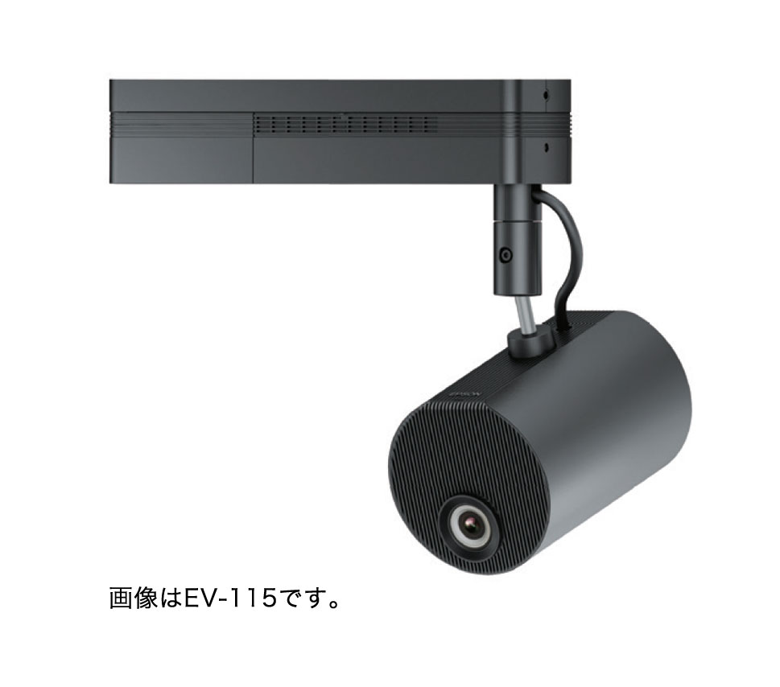

どこを映像にする？
壁面、テーブルなど、投写したい面の位置と大きさを整理。
プロジェクター ↗EQUIPMENT / 46
空間演出プロジェクター
スクリーン以外の場所にも、映像で表情を。
KEY SPECIFICATIONS

画像を大きく見る ＋画像出典：EPSON 公式製品資料
01 / ROLE & FLOW
実際の配線・端子構成は案件に合わせて決めます。
02 / BEFORE YOUR BRIEF
壁面、テーブルなど、投写したい面の位置と大きさを整理。
照明の状態、投写面の色や質感、見る位置も合わせて検討。
天井・床置きなどの希望と会場の取付条件を共有。取付部材は方式別に選びます。
03 / CHOOSING THE RIGHT TOOL
受付や展示空間で、壁面やテーブルに合わせて映像を見せたいときに。投写面の色と素材、周囲の明るさ、見る位置から構成を考えます。
4K入力・4K表示の機種ではありません。内蔵スピーカーはなく、音声が必要なら別に構成します。USB Type-Aは給電またはセンサー入力用で、USBメモリー映像再生端子として案内しません。
HDMI入力とSDHC CLASS10に対応するSDカードスロットを搭載。主な同梱品は国内100V専用ACケーブル、リモコンと電池、電源アダプターカバー、直付け天吊金具、案内冊子。床置き金具と配線ダクト取付金具はオプションです。
参考資料：メーカー公式仕様 ↗（2026年11月3日照合）
投写面の位置・大きさ・素材、周囲の明るさ、映像素材と音声、取付方法、電源と設置条件をお聞かせください。本体・周辺機材・搬入出・設営・本番操作・撤去を分けて、必要な範囲を整理します。セットの付属品や人員が自動で含まれる表示ではありません。